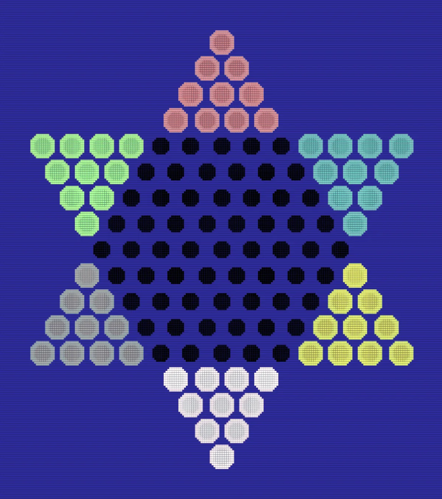

8-bit edition · hexagonal star · two to six players
Chinese checkers in the arcade's 8-bit edition, on a home computer's blue text screen, with a hexagonal star of blocks and ten marbles each.
Play two, three, four or six players against the computer, or friends online with room codes and chat. Steps light up green, hops yellow, and hops chain.
pipx install magmacrunch-chinese-checkersversion by magmacrunch media
cheapness impact factor 1.3